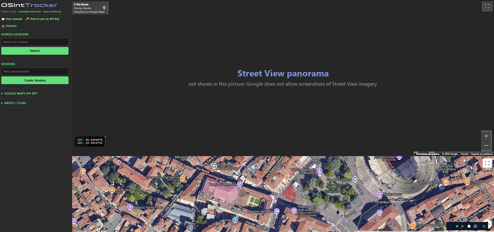

User Manual
OSInt Tracker · Andrea Cumini · www.osintinfo.net
1. Overview
When you explore a place in Google Street View it is easy to lose track of where you have already been, and to be unable to find again the spot where you noticed something. OSInt Tracker records the route for you: while you move in Street View as usual, every panorama you visit and every turn of the camera becomes a numbered step, drawn on a satellite map. You can attach a note to any step and replay the whole route later, seeing each view exactly as you framed it.
- Street View and a satellite map side by side, always in sync.
- Automatic recording of the route, including where the camera was pointing.
- Separate sessions for different investigations.
- Tags (notes) on any step, shown on the map and during playback.
- Step-by-step or automatic playback, with animated camera turns.
- Search by address or place name.
2. Requirements
| Item | Requirement |
|---|---|
| Operating system | Windows 10 or 11 (64-bit) for the packaged program. From source: any system with Python 3.10 or later. |
| Browser | A recent version of Chrome, Edge or Firefox. |
| Internet | Required: maps, Street View and the positions of your recorded steps come from Google. |
| Google Maps API key | Your own key, with Maps JavaScript API and Geocoding API enabled (see section 3). |
| Network port | Port 5000 on your computer must be free. |
3. Getting a Google Maps API key
The application shows Google's maps through your own Google Maps Platform account: you need a personal API key. Creating it takes about ten minutes. The names of the menus below are those of the Google Cloud Console; Google changes them from time to time, but the steps stay the same.
3.1 Create a project
- Open console.cloud.google.com and sign in with your Google account.
- Click the project selector at the top, then New project.
- Give it a name (for example
osint-tracker) and click Create. Make sure the new project is the one selected in the top bar.
3.2 Link a billing account
- Open Billing from the main menu.
- Create a billing account (name and a payment method are required) and link it to the project.
Google requires a billing account even if you never go beyond the free usage. With the standard pay-as-you-go plan every service has a number of free calls each month; you pay only for what exceeds it.
| What you do in the program | Google service | Category | Free every month |
|---|---|---|---|
| Open or reload the panel: the satellite map | Dynamic Maps | Essentials | 10,000 |
| Open or reload the panel: Street View | Dynamic Street View | Pro | 5,000 |
| Each search in Search Location | Geocoding | Essentials | 10,000 |
Google's Essentials services include 10,000 free calls per service per month; Street View belongs to the Pro category, which includes 5,000. Both are counted once each time the panel is opened or reloaded, not for every movement: walking along a street, recording, replaying a route and opening your sessions do not add calls. In practice you would have to open the panel more than 5,000 times in a month before paying anything.
3.3 Enable the two services
- Go to APIs & Services → Library.
- Search for Maps JavaScript API, open it and click Enable. It provides the map and Street View.
- Search for Geocoding API and click Enable. It is used by the Search Location box.
No other service is needed.
3.4 Create the key
- Go to APIs & Services → Credentials (in the Google Maps Platform pages it is called Keys & Credentials).
- Click Create credentials → API key.
- Copy the key that is shown.
3.5 Protect the key (recommended)
Open the key you just created and set:
- Application restrictions → Websites, adding these two addresses:
http://127.0.0.1:5000/*http://localhost:5000/* - API restrictions → Restrict key, selecting only Maps JavaScript API and Geocoding API.
With these two settings the key works only from this program on your computer. To keep costs under control you can also set a budget alert (Billing → Budgets & alerts) and a daily limit on each service (APIs & Services → the API → Quotas).
3.6 Enter the key in the program
- In the left panel open Google Maps API Key.
- Paste the key and click Save API Key (or press Enter).
The maps load at once. The key is saved in the file key.txt next to the program and does not have to be entered again.
4. Starting the application
Start the program (OSINTTracker.exe, or pythonw launcher.py from source). A small bar appears in the bottom-right corner of the screen and stays on top of the other windows:
| Control | Function |
|---|---|
| Coloured dot | Grey: server stopped. Yellow: starting. Green: running. |
| ▶ | Starts the server. |
| ■ | Stops the server. |
| 🌐 | Opens (or re-opens) the panel in your browser at http://127.0.0.1:5000. |
| ✕ | Closes everything: server and launcher. |
| ⋮⋮ | Drag here to move the bar. |
When the launcher opens, the server starts by itself and the browser opens as soon as it is ready. If you close the browser tab, click 🌐 to open it again.
5. First run
- The panel opens with the Google Maps API Key section expanded: paste your key and save it (section 3).
- Street View appears in the upper area and the satellite map below it.
- Try the search box with an address to check that everything works.
6. The interface

Why the panorama is missing: in this picture the Street View area is replaced by a placeholder, because Google does not allow screenshots of Street View imagery to be published. In the program that area shows the real panorama.
Left panel
- User manual / How to get an API key — open this manual.
- Licenses — shows the license of the program and of the software it includes.
- Search Location — type an address or a place and press Enter.
- Steps — the steps of the current session, most recent first. Visible when a session is selected.
- Session Controls — start/stop recording, play the route.
- Playback — shown while a route is being replayed.
- Sessions — create, select and delete sessions.
- Google Maps API Key — enter or change your key.
- About / Legal — license and Google terms.
Street View (upper area)
- Step box (left, under Google's address box) — number and tag of the recorded step you are on or near (within 15 metres).
- ● REC (right, under the full-screen button) — recording is active.
- Yellow banner (top centre) — the tag of the current step during playback.
- LAT / LNG (bottom left) — coordinates of the panorama you are looking at.
Satellite map (lower area)
- Red dot with a cone — where you are and what the camera frames: the cone points where you are looking and narrows when you zoom in.
- Green numbered circles — the recorded steps; orange ones have a tag, shown in a label.
- Green line — the route, in recording order.
- Click on the map — Street View moves to the nearest official Google panorama.
7. Sessions
A session is one route: an investigation, an area, a walk. Sessions are independent of each other.
- Create: type a name in New session name and press Enter (or click Create Session). The new session is selected.
- Select: click a session. Street View goes to its last step and the route is drawn on the map; while the positions are being fetched the Steps title shows locating n/m.
- Delete: click the red ✕ next to the session and confirm. All its steps are deleted permanently.
8. Recording a route
- Select or create a session and click ⏺ Start Rec. In a new session the view you are looking at becomes step #1; in an existing session Street View first returns to the last step and continues from there.
- Move in Street View as usual (arrows on the road, clicks on the map, search). Every new panorama is saved as a step.
- Turn the camera towards what interests you. When you stop for a moment, a turn of at least 10° (or a zoom change) is saved as a ↻ turn step on the same spot.
- Click ⬛ Stop Recording to move freely without recording.
Each row of the list shows the step number, its coordinates and the camera heading. Click a row to go back to that step with the same view. The most recent step is highlighted in red.
9. Playback
Click ▶ Play Route to replay the session from the first step. Each step shows the same panorama with the same framing; turns of the camera are animated.
| Control | Function |
|---|---|
| ◀ Prev / Next ▶ | Previous / next step. Also the ← and → keys (click the left panel first if the arrows move the map instead). |
| ▶▶ Auto Play | Plays the steps one after the other; the button becomes Pause. |
| Speed | Time on each step: 0.5 s to 5 s. Can be changed while playing. |
| Click on a row | Jumps to that step. |
| ■ Stop | Ends the playback. |
The current step is highlighted in blue in the list; its number and tag are shown on Street View, and a tagged step also shows the yellow banner.
10. Tags
- Add or edit: click the 🏷️ button on a step, type the text and click Save Tag (or Ctrl+Enter). Esc cancels.
- Remove: open the tag, clear the text and save.
- Where it appears: under the step in the list, in an orange marker with a label on the map, in the step box on Street View and in the yellow banner during playback.
- Delete a step: click its red ✕ and confirm.
A tag can be put on a turn step too: it is the natural way to note what the camera was pointed at.
11. Your data
Everything stays on your computer, in two files next to the program:
| File | Content |
|---|---|
osint.db | Your sessions. For every step: the identifier of the Google panorama, the camera heading, pitch and zoom, the time and your tag. |
key.txt | Your Google Maps API key. |
launcher.log | Technical log of the server, useful if something goes wrong. |
The program does not store coordinates, Street View images or map tiles: Google's terms allow keeping panorama identifiers, not the content. The coordinates you see are requested from Google each time a session is opened and are kept in memory only. This has two consequences:
- Opening a session needs an Internet connection and takes a moment for long routes.
- If Google removes or replaces a panorama, that step is shown as ⚠ panorama unavailable: its tag and its place in the route remain, but the view can no longer be shown.
The server only accepts connections from your own computer and only from the program's page. To back up or move your work, copy osint.db while the program is closed.
osint.db.old and a new empty one is created.12. Troubleshooting
| Problem | What to check |
|---|---|
| The map is grey, or a Google error message appears | The key is wrong, billing is not linked to the project, or Maps JavaScript API is not enabled. If you restricted the key, check the two addresses in 3.5. |
| "Google Maps rejected the API key" | Same causes as above. Correct the key in Google Maps API Key and save. |
| Search does not find anything | Geocoding API is not enabled, or it is not among the services allowed for the key. |
| Street View is black | There is no Street View coverage there: click another point on the map or use the search. |
| "⚠ panorama unavailable" | Google no longer provides that panorama (see section 11). |
| Steps are not being saved | Check that a session is selected and that ● REC is visible. |
| "Cannot connect to server" | The server is stopped: click ▶ on the launcher bar, wait for the green dot and reload the page. |
| "Server and page versions differ" | After an update: click ■ then ▶ on the launcher bar and reload the page with F5. |
| The dot stays grey or yellow | Port 5000 may be used by another program: close it and try again. Details are in launcher.log. |
13. License and legal notes
OSInt Tracker — Copyright © 2024-2026 Andrea Cumini — andrea@osintinfo.net — www.osintinfo.net
Free software under the GNU General Public License version 3 with additional terms requiring the preservation of the author attribution: see the LICENSE and NOTICE files distributed with the program. It comes with no warranty: the terms you accept at startup are in the file DISCLAIMER.txt.
This application includes Google Maps features and content. Use of Google Maps features and content is subject to the Google Maps/Google Earth Additional Terms of Service and the Google Privacy Policy. You use your own API key and are responsible for complying with the Google Maps Platform Terms of Service.
This program is not affiliated with or endorsed by Google. Google Maps and Street View are trademarks of Google LLC. Use it in compliance with the laws that apply to you.
Manuale utente
OSInt Tracker · Andrea Cumini · www.osintinfo.net
1. Panoramica
Esplorando un luogo in Google Street View è facile perdere il filo di dove si è già passati, e non riuscire più a ritrovare il punto in cui si era notato qualcosa. OSInt Tracker registra il percorso al posto tuo: mentre ti muovi in Street View come sempre, ogni panorama visitato e ogni rotazione dell'inquadratura diventano uno step numerato, disegnato su una mappa satellitare. Puoi associare una nota a qualsiasi step e rivedere in seguito l'intero percorso, ritrovando ogni vista esattamente come l'avevi inquadrata.
- Street View e mappa satellitare affiancate, sempre sincronizzate.
- Registrazione automatica del percorso, compresa la direzione dell'inquadratura.
- Sessioni separate per indagini diverse.
- Tag (note) su qualsiasi step, visibili sulla mappa e in riproduzione.
- Riproduzione passo-passo o automatica, con rotazioni animate.
- Ricerca per indirizzo o nome del luogo.
2. Requisiti
| Voce | Requisito |
|---|---|
| Sistema operativo | Windows 10 o 11 (64 bit) per il programma compilato. Da sorgente: qualsiasi sistema con Python 3.10 o successivo. |
| Browser | Una versione recente di Chrome, Edge o Firefox. |
| Internet | Necessaria: mappe, Street View e posizioni degli step registrati arrivano da Google. |
| API key di Google Maps | Una chiave personale, con Maps JavaScript API e Geocoding API abilitate (vedi sezione 3). |
| Porta di rete | La porta 5000 del computer deve essere libera. |
3. Ottenere una API key di Google Maps
L'applicazione mostra le mappe di Google attraverso il tuo account Google Maps Platform: serve una API key personale. Per crearla bastano una decina di minuti. I nomi dei menu qui sotto sono quelli della Google Cloud Console; Google li modifica ogni tanto, ma i passaggi restano gli stessi.
3.1 Creare un progetto
- Apri console.cloud.google.com e accedi con il tuo account Google.
- Clicca sul selettore dei progetti in alto, poi Nuovo progetto.
- Assegna un nome (per esempio
osint-tracker) e clicca Crea. Verifica che il nuovo progetto sia quello selezionato nella barra in alto.
3.2 Collegare un account di fatturazione
- Apri Fatturazione dal menu principale.
- Crea un account di fatturazione (servono un nome e un metodo di pagamento) e collegalo al progetto.
Google richiede un account di fatturazione anche se non superi mai l'utilizzo gratuito. Con il normale piano a consumo (pay-as-you-go) ogni servizio ha un numero di chiamate gratuite al mese; si paga solo l'eccedenza.
| Che cosa fai nel programma | Servizio Google | Categoria | Gratuite ogni mese |
|---|---|---|---|
| Apri o ricarichi il pannello: la mappa satellitare | Dynamic Maps | Essentials | 10.000 |
| Apri o ricarichi il pannello: Street View | Dynamic Street View | Pro | 5.000 |
| Ogni ricerca in Search Location | Geocoding | Essentials | 10.000 |
I servizi Essentials di Google includono 10.000 chiamate gratuite al mese per ciascun servizio; Street View appartiene alla categoria Pro, che ne include 5.000. Entrambi vengono contati una volta ogni volta che apri o ricarichi il pannello, non a ogni spostamento: percorrere una strada, registrare, riprodurre un percorso e aprire le sessioni non aggiungono chiamate. In pratica dovresti aprire il pannello più di 5.000 volte in un mese prima di pagare qualcosa.
3.3 Abilitare i due servizi
- Vai su API e servizi → Libreria.
- Cerca Maps JavaScript API, aprila e clicca Abilita. Fornisce la mappa e Street View.
- Cerca Geocoding API e clicca Abilita. Serve alla casella Search Location.
Non servono altri servizi.
3.4 Creare la chiave
- Vai su API e servizi → Credenziali (nelle pagine di Google Maps Platform si chiama Chiavi e credenziali).
- Clicca Crea credenziali → Chiave API.
- Copia la chiave mostrata.
3.5 Proteggere la chiave (consigliato)
Apri la chiave appena creata e imposta:
- Restrizioni delle applicazioni → Siti web, aggiungendo questi due indirizzi:
http://127.0.0.1:5000/*http://localhost:5000/* - Restrizioni delle API → Limita chiave, selezionando solo Maps JavaScript API e Geocoding API.
Con queste due impostazioni la chiave funziona soltanto da questo programma sul tuo computer. Per tenere i costi sotto controllo puoi anche impostare un avviso di budget (Fatturazione → Budget e avvisi) e un limite giornaliero per ciascun servizio (API e servizi → l'API → Quote).
3.6 Inserire la chiave nel programma
- Nel pannello di sinistra apri Google Maps API Key.
- Incolla la chiave e clicca Save API Key (o premi Invio).
Le mappe si caricano subito. La chiave viene salvata nel file key.txt accanto al programma e non va più reinserita.
4. Avvio dell'applicazione
Avvia il programma (OSINTTracker.exe, oppure pythonw launcher.py da sorgente). Nell'angolo in basso a destra dello schermo compare una barretta che resta sempre sopra le altre finestre:
| Controllo | Funzione |
|---|---|
| Pallino colorato | Grigio: server fermo. Giallo: in avvio. Verde: in funzione. |
| ▶ | Avvia il server. |
| ■ | Ferma il server. |
| 🌐 | Apre (o riapre) il pannello nel browser all'indirizzo http://127.0.0.1:5000. |
| ✕ | Chiude tutto: server e launcher. |
| ⋮⋮ | Trascina da qui per spostare la barretta. |
All'apertura del launcher il server parte da solo e il browser si apre appena è pronto. Se chiudi la scheda del browser, clicca 🌐 per riaprirla.
5. Primo avvio
- Il pannello si apre con la sezione Google Maps API Key espansa: incolla la tua chiave e salvala (sezione 3).
- Street View compare nell'area superiore e la mappa satellitare sotto.
- Prova la casella di ricerca con un indirizzo per verificare che tutto funzioni.
6. L'interfaccia
Perché manca il panorama: in questa immagine l'area di Street View è sostituita da un riquadro, perché Google non consente di pubblicare screenshot delle immagini di Street View. Nel programma, in quell'area vedi il panorama vero.
Pannello di sinistra
- User manual / How to get an API key — aprono questo manuale.
- Licenses — mostra la licenza del programma e del software che include.
- Search Location — scrivi un indirizzo o un luogo e premi Invio.
- Steps — gli step della sessione corrente, dal più recente. Visibile quando una sessione è selezionata.
- Session Controls — avvio/arresto della registrazione, riproduzione del percorso.
- Playback — compare durante la riproduzione.
- Sessions — creare, selezionare ed eliminare le sessioni.
- Google Maps API Key — inserire o cambiare la chiave.
- About / Legal — licenza e termini di Google.
Street View (area superiore)
- Riquadro dello step (a sinistra, sotto l'indirizzo di Google) — numero e tag dello step registrato su cui ti trovi o a cui sei vicino (entro 15 metri).
- ● REC (a destra, sotto il pulsante schermo intero) — la registrazione è attiva.
- Banner giallo (in alto al centro) — il tag dello step corrente durante la riproduzione.
- LAT / LNG (in basso a sinistra) — coordinate del panorama che stai guardando.
Mappa satellitare (area inferiore)
- Punto rosso con un cono — dove ti trovi e che cosa inquadra la camera: il cono punta nella direzione in cui guardi e si stringe quando fai zoom.
- Cerchi verdi numerati — gli step registrati; quelli arancioni hanno un tag, mostrato in un'etichetta.
- Linea verde — il percorso, nell'ordine di registrazione.
- Click sulla mappa — Street View si sposta sul panorama ufficiale Google più vicino.
7. Sessioni
Una sessione è un percorso: un'indagine, una zona, un tragitto. Le sessioni sono indipendenti tra loro.
- Creare: scrivi un nome in New session name e premi Invio (o clicca Create Session). La nuova sessione viene selezionata.
- Selezionare: clicca su una sessione. Street View va al suo ultimo step e il percorso viene disegnato sulla mappa; mentre le posizioni vengono richieste, accanto al titolo Steps compare locating n/m.
- Eliminare: clicca la ✕ rossa accanto alla sessione e conferma. Tutti i suoi step vengono eliminati definitivamente.
8. Registrare un percorso
- Seleziona o crea una sessione e clicca ⏺ Start Rec. In una sessione nuova la vista che stai guardando diventa lo step #1; in una sessione esistente Street View torna prima all'ultimo step e si prosegue da lì.
- Muoviti in Street View come sempre (frecce sulla strada, click sulla mappa, ricerca). Ogni nuovo panorama viene salvato come step.
- Ruota l'inquadratura verso ciò che ti interessa. Quando ti fermi un istante, una rotazione di almeno 10° (o un cambio di zoom) viene salvata come step ↻ turn nello stesso punto.
- Clicca ⬛ Stop Recording per muoverti liberamente senza registrare.
Ogni riga dell'elenco mostra il numero dello step, le coordinate e la direzione dell'inquadratura. Clicca una riga per tornare a quello step con la stessa vista. Lo step più recente è evidenziato in rosso.
9. Riproduzione
Clicca ▶ Play Route per rivedere la sessione dal primo step. Ogni step mostra lo stesso panorama con la stessa inquadratura; le rotazioni sono animate.
| Controllo | Funzione |
|---|---|
| ◀ Prev / Next ▶ | Step precedente / successivo. Anche i tasti ← e → (clicca prima sul pannello di sinistra se le frecce muovono la mappa). |
| ▶▶ Auto Play | Riproduce gli step uno dopo l'altro; il pulsante diventa Pause. |
| Speed | Tempo su ogni step: da 0,5 s a 5 s. Si può cambiare durante la riproduzione. |
| Click su una riga | Salta a quello step. |
| ■ Stop | Termina la riproduzione. |
Lo step corrente è evidenziato in blu nell'elenco; numero e tag compaiono su Street View, e uno step con tag mostra anche il banner giallo.
10. Tag
- Aggiungere o modificare: clicca il pulsante 🏷️ di uno step, scrivi il testo e clicca Save Tag (o Ctrl+Invio). Esc annulla.
- Rimuovere: apri il tag, cancella il testo e salva.
- Dove compare: sotto lo step nell'elenco, in un marker arancione con etichetta sulla mappa, nel riquadro dello step su Street View e nel banner giallo in riproduzione.
- Eliminare uno step: clicca la sua ✕ rossa e conferma.
Il tag si può mettere anche su uno step di rotazione: è il modo naturale per annotare che cosa stavi inquadrando.
11. I tuoi dati
Tutto resta sul tuo computer, in due file accanto al programma:
| File | Contenuto |
|---|---|
osint.db | Le tue sessioni. Per ogni step: l'identificativo del panorama Google, direzione, inclinazione e zoom dell'inquadratura, l'ora e il tuo tag. |
key.txt | La tua API key di Google Maps. |
launcher.log | Registro tecnico del server, utile se qualcosa non funziona. |
Il programma non salva coordinate, immagini di Street View né porzioni di mappa: i termini di Google permettono di conservare gli identificativi dei panorami, non i contenuti. Le coordinate che vedi vengono richieste a Google ogni volta che apri una sessione e restano solo in memoria. Questo ha due conseguenze:
- Per aprire una sessione serve la connessione a Internet, e per i percorsi lunghi occorre qualche istante.
- Se Google rimuove o sostituisce un panorama, quello step viene mostrato come ⚠ panorama unavailable: il tag e la posizione nel percorso restano, ma la vista non può più essere mostrata.
Il server accetta connessioni soltanto dal tuo computer e soltanto dalla pagina del programma. Per fare una copia di sicurezza o spostare il lavoro, copia osint.db a programma chiuso.
osint.db.old e ne viene creato uno nuovo, vuoto.12. Risoluzione dei problemi
| Problema | Che cosa controllare |
|---|---|
| La mappa è grigia, o compare un messaggio di errore di Google | La chiave è errata, la fatturazione non è collegata al progetto, oppure Maps JavaScript API non è abilitata. Se hai limitato la chiave, controlla i due indirizzi del punto 3.5. |
| "Google Maps rejected the API key" | Stesse cause. Correggi la chiave in Google Maps API Key e salva. |
| La ricerca non trova nulla | Geocoding API non è abilitata, oppure non è tra i servizi consentiti per la chiave. |
| Street View è nero | In quel punto non c'è copertura Street View: clicca un altro punto sulla mappa o usa la ricerca. |
| "⚠ panorama unavailable" | Google non fornisce più quel panorama (vedi sezione 11). |
| Gli step non vengono salvati | Verifica che una sessione sia selezionata e che ● REC sia visibile. |
| "Cannot connect to server" | Il server è fermo: clicca ▶ sulla barretta del launcher, attendi il pallino verde e ricarica la pagina. |
| "Server and page versions differ" | Dopo un aggiornamento: clicca ■ e poi ▶ sulla barretta del launcher e ricarica la pagina con F5. |
| Il pallino resta grigio o giallo | La porta 5000 potrebbe essere occupata da un altro programma: chiudilo e riprova. I dettagli sono in launcher.log. |
13. Licenza e note legali
OSInt Tracker — Copyright © 2024-2026 Andrea Cumini — andrea@osintinfo.net — www.osintinfo.net
Software libero distribuito con la GNU General Public License versione 3 e termini aggiuntivi che impongono di conservare l'attribuzione all'autore: vedi i file LICENSE e NOTICE distribuiti con il programma. Viene fornito senza alcuna garanzia: le condizioni che accetti all'avvio sono nel file DISCLAIMER.txt.
Questa applicazione include funzionalità e contenuti di Google Maps. L'uso delle funzionalità e dei contenuti di Google Maps è soggetto ai Termini di servizio aggiuntivi di Google Maps/Google Earth e alle Norme sulla privacy di Google. Usi la tua API key e sei responsabile del rispetto dei Termini di servizio di Google Maps Platform.
Questo programma non è affiliato a Google né approvato da Google. Google Maps e Street View sono marchi di Google LLC. Usalo nel rispetto delle leggi a te applicabili.